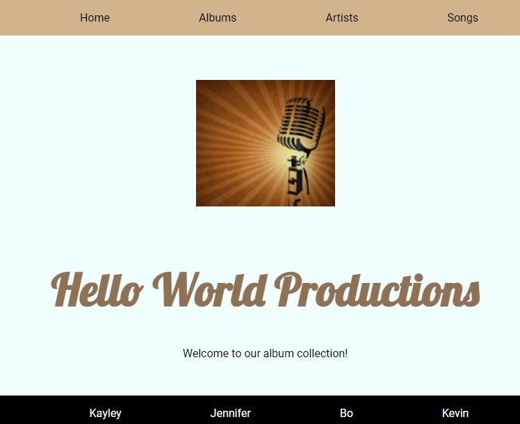

Album Collection
Single Page Application, JS Node, created an API using API.Net Entity Framework, team project
I am a recent graduate of the We Can Code IT bootcamp, where I studied C# and full stack web development. Based in Cleveland, Ohio, USA, I am a career changer wih 15 years experience working remotely in online education. I have extensive experience creating online lessons and I was invited on several occasions to train other teachers in educational technology. I am a world traveler. I speak French, Spanish and Swahili. I am problem solver and out of the box thinker. I enjoy developing software solutions, and I am especially motivated when faced with a challenging new situation that needs to be figured out.
C# • .NET Core • Active Server Pages / ASP.net • JavaScript • Flexbox • MVC • HTML • CSS • Grid • TDD • Agile (Scrum) • Object Oriented Programming (OOP) • AJAX • JSON • React • Restful APIs • Responsive Design / Mobile • Relational Databases / MS SQL • Source Control / GitHub Visual Studio
Microsoft Office Suite • G Suite • Adobe Creative Suite • IQity Learning Management System • Audacity • Screencast-O-Matic • Skype • Zoom • Collaborate
Extensive remote working experience • Conversational Spanish, French and Swahili • Online education • Team facilitator
Examples of my software development work.
Single Page Application, JS Node, created an API using API.Net Entity Framework, team project

Public API project, JavaScript, HTML, CSS
Single Page Application (SPA) Game, JavaScript, CSS, HTML

A full-stack, server-side-rendered, web application. - Front-end portion using HTML and CSS. - Back-end portion using ASP.Net Core, Entity Framework and a SQL database.

Team project creating .Net MVC website in which users can view, create, edit and delete video game reviews C#, Visual Studio, Git, Github, GitBash, OOP, MS SQL, .NET Core, HTML, CSS